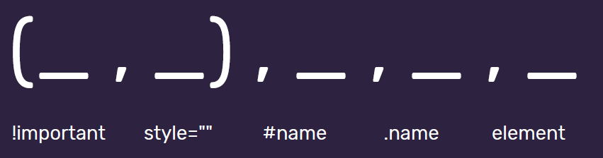

Absolutnie niczego
Choć to raczej nic dziwnego, z racji, że był to tydzień czysto organizacyjny.
Choć to raczej nic dziwnego, z racji, że był to tydzień czysto organizacyjny.
Kiedy tworzyłem swoje pierwsze strony nie używałem ich. Miałem okazję je później poznać, ale dopiero wyrabiam nawyk ich używania.
Dostępnego pod tym adresem validatora kodu nie używałem ani nie widziałem wcześniej. Wydaje się fajnym rozwiązaniem.
Wcześniej nie używałem VSC do pisania stron więc nie znam jeszcze wszystkich jego funkcjonalności. Szkielet strony to fajne rozwiązanie, choć z racji, że wcześniej używałem VSC do tworzenia projektów w django, wymagał ręcznego przestawienia "Language mode" na HTML żeby dało się tego użyć.
Miałem wcześniej do czynienia z tym narzędziem pod kątem organizacji zadań długoterminowo.
Pierwszy raz używam go do monitorowania postępów w małych zadaniach.
Do tej pory moja wiedza kończyłą się na "oba pogrubiają" oraz "oba pochylają".
Dopiero w trakcie szkolenia (w dużej części nastawionego na semantykę) poznałem różnicę tj:
Kiedyś używałem, później przestałem, ostatecznie zapomniałem, a teraz mi przypomniano =)
Aby przewinąć stronę należy w odnośniku wpiać <a href="#ID">Widoczny
Teskt</a>
Istniał jednak jeden problem przy używaniu elementów ustawionych jako position: sticky. (Po
przesunieciu elementy były zasłonięte)
Jednym z obejść problemu było dodanie:
Ogólna zasada brzmiąca "style o większej specyficzności mają priorytet" oraz "ze stylów o równej
specyficzności priorytet ma ten dodany później"
Znałem już wcześniej. I nawet mniej-więcej potrafiłem wyczuć które odwołanie jest bardziej
specyficzne.
Niemniej, są przypadki, które interpretowałbym inaczej. W ramach szkolenia dopiero poznałem
właściwą metodę liczenia tej specyficzności (porównywalna do medali).

Zalecana metoda nadawania nazw to używanie pojedynczych słów (a gdy to niemożliwe to kebab-case).
Nazwy klas powinny opisywać funkcje elementu na stronę.
Nazwy klas powinny być w języku angielskim.
Jako, że wcześniej nie używałem JS to wszystko jest tu dla mnie nowe.
Skropty dodajemy bezpośrednio przez zamknięciem znacznika body wewnątrz tagu
<script></script>
Można też odwołać się do zewnętrznego pliku z kodem JS poprzez:
<script src="main.js"></script>
Podobnie jak w każdym języku programowania, występują tu zmienne i stałe.
Zmienne tworzymy przez polecenie
let name = 'value'
Stałe tworzymy przez polecenie
const name = 'value'
Pierwsze instrukcje poznane w ramach szkolenia to alert oraz console log
► alert (powiadomienie-popup w przeglądarce) wywołujemy tak:
alert('value')
► console log (komunikat widoczny w konsoli dostępnej pod F12) wywołujemy tak:
console.log('value')